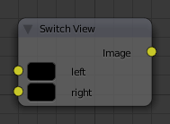
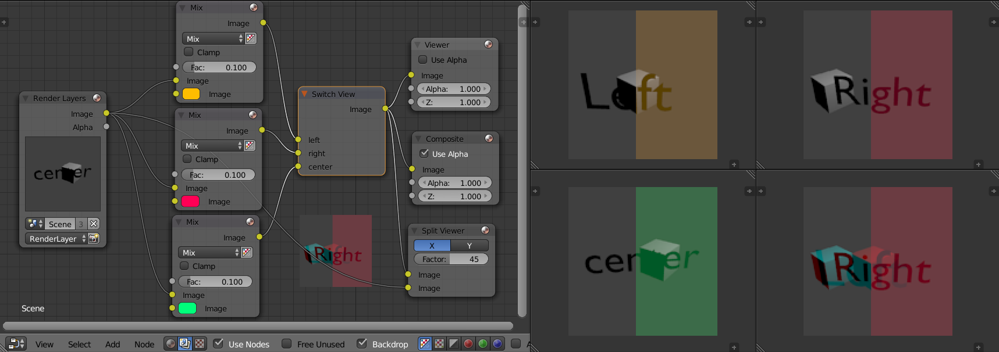

Switch View Node¶

Switch View Node.
The Switch View node combines the views (left and right) into a single Stereo 3D output. This can be useful if for example, you need to treat the view as separate images by combining each of the views.
Inputs¶
- Left
- Left eye image input.
- Right
- Right eye image input.
Properties¶
This node has no properties.
Outputs¶
- Image
- Stereo 3D image output.
Example¶

Compositor, Backdrop and Split Viewer Node.
The views to render are defined in the current scene views, in a similar way as you define the composite output resolution in the current scene render panel, regardless of the Image nodes resolutions or Render Layers from different scenes.